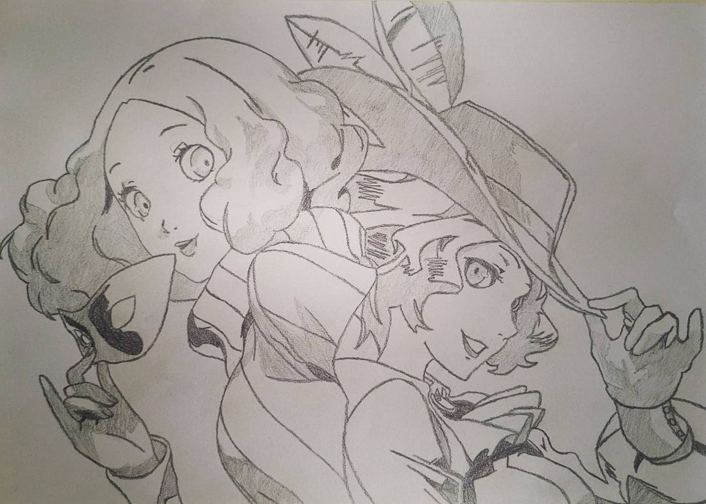
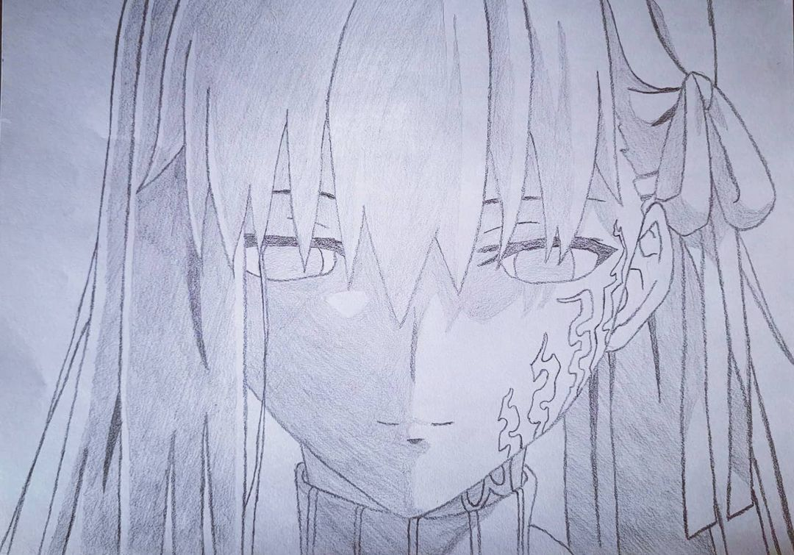
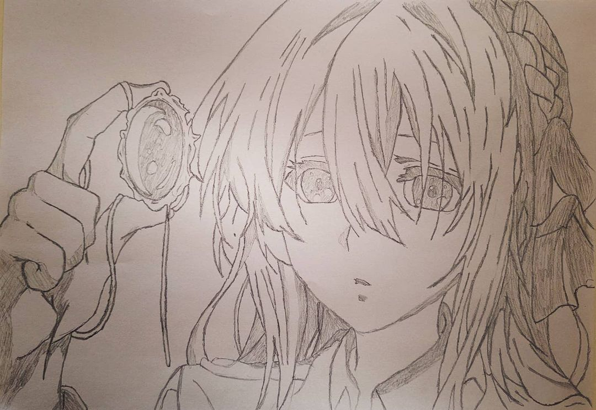

<div
    class="flex justify-center items-center font-semibold mb-4 shadow py-4 px-2 bg-gray-500/80 text-white rounded select-none">
    <h1 class="text-5xl underline">3X2 en dibujos sin color </h1> 
    <span class="material-symbols-outlined text-5xl pt-3">keyboard_double_arrow_down</span>
</div>

<div id="default-carousel" class="relative w-full" data-carousel="slide" routerLink="/products"
    routerLinkActive="active-link">
    <div class="relative h-72 overflow-hidden rounded-lg md:h-96">
        <div class="hidden duration-700 ease-in-out" data-carousel-item>
            
        </div>
        <div class="hidden duration-700 ease-in-out" data-carousel-item>
            
        </div>
        <div class="hidden duration-700 ease-in-out" data-carousel-item>
            
        </div>
    </div>
</div>